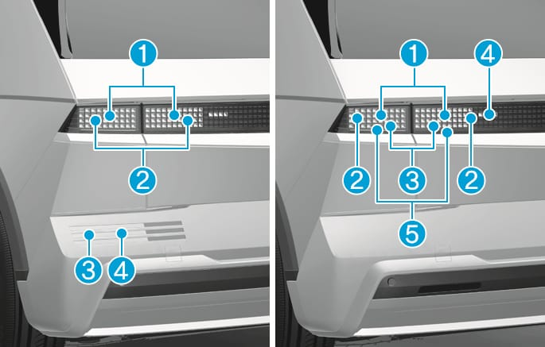

미등, 제동등, 방향지시등, 후진등, 가니시테일
A타입/B타입

2C_RearLampOverview
- 제동등
- 미등/제동등
- 방향지시등(A타입: 벌브, B타입: LED)
- 후진등(A타입: 벌브, B타입: LED)
- 가니시테일
미등, 제동등, 방향지시등, 후진등, 가니시테일이 켜지지 않는 경우, 당사 직영 하이테크센터나 블루핸즈에서 차량을 점검하십시오.
벌브 타입 후진등, 방향지시등 교체
-
주차 브레이크를 체결한 후 시동을 끄십시오.
-
바퀴를 바깥쪽 방향으로 돌리고 일자(–) 드라이버를 이용해 뒷바퀴쪽 휠 가드에 장착되어 있는 서비스 홀 커버 클립을 분리하십시오.
-
서비스 홀 커버를 분리한 후 내부의 램프 소켓을 왼쪽으로 돌려 분리하십시오.
-
전구를 소켓 방향으로 누른 상태로 왼쪽으로 돌린 후 소켓으로부터 분리하십시오.
-
새 전구를 소켓에 넣고 누르면서 오른쪽으로 돌려 고정하십시오.
-
램프 소켓을 서비스 홀 내부 장착부에 결합한 후 오른쪽으로 끝까지 돌려 고정하십시오.
-
서비스 홀 커버를 닫고 고정 클립으로 고정하십시오.